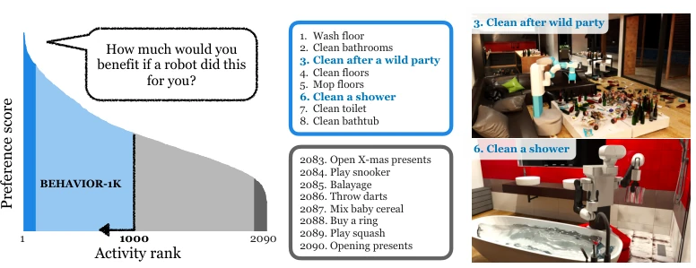
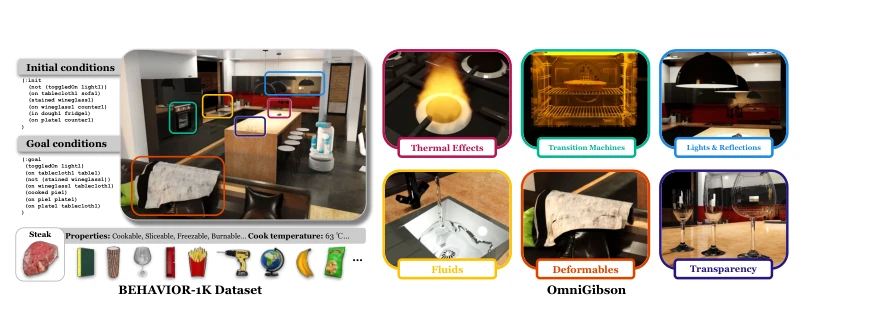
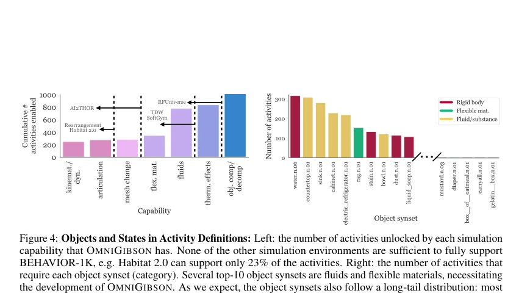
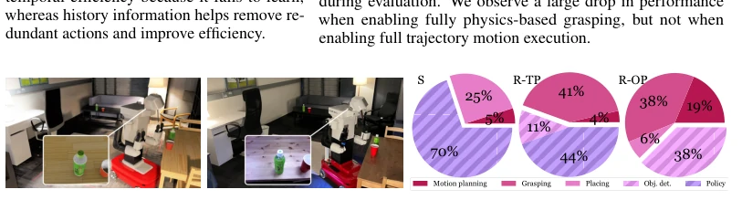
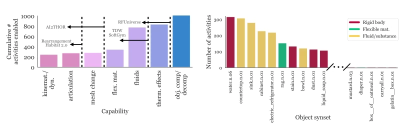

The Stanford team took a substantive approach this time; BEHAVIOR-1K directly released 1000 activities, claiming to be 'human-centric'. The biggest highlight of this benchmark is conducting a thousand-person survey, including household chores like 'scrubbing toilets' and 'mopping floors' that are truly headache-inducing into the list, rather than toy tasks like 'holding cups' as before [27]. The OMNIGIBSON simulator also invested heavily, with fluids, deformables, and thermal effects all included, and rendering performance significantly surpasses Habitat 2.0. But do not get too excited too soon; in the experiments, the most basic 'picking up trash' task, pure visual reinforcement learning failed outright, still relying on action primitives (Primitives) plus memory. Moreover, running this simulator is estimated to max out the graphics card, after all, it has ray tracing. The most awkward part is Sim-to-Real transfer; after handling the real robot, the grasp failure rate skyrocketed, suggesting that 'perfect grasping' in the virtual world still relies on luck in reality. Overall, this is a very good benchmark, but it is still far from general-purpose robots, after all, not even a real human was simulated in.
研究动机Motivation
现有具身 AI 基准测试大多由研究者拍脑袋设计，未必符合人类真实需求 [17-26]。虽然 BEHAVIOR-100 [27] 做了些尝试，但活动数量仅 100 个，场景单一（全是房子），且物理仿真不够真实（缺乏流体、变形体）。这导致训练出的机器人可能擅长“整理房间”，却不会“洗地板”。作者认为基准应源于人类需求，因此通过调查 1461 名参与者，从 2090 个活动中筛选出 1000 个高需求活动（如清洁、烹饪）。同时，现有模拟器在多样性与真实性间存在 trade-off，无法同时支持复杂场景和精细物理交互。BEHAVIOR-1K 旨在解决活动多样性不足和仿真真实感缺失的问题，为具身 AI 提供更贴近现实的挑战，推动机器人从“实验室玩具”走向“家庭帮手”。
Existing embodied AI benchmarks are mostly designed by researchers ad hoc, not necessarily conforming to human real needs [17-26]. Although BEHAVIOR-100 [27] made some attempts, the activity count was only 100, scenes were singular (all houses), and physical simulation was not realistic enough (lacking fluids, deformables). This leads to trained robots possibly being good at 'tidying rooms', but not knowing how to 'wash floors'. The authors believe benchmarks should originate from human needs, therefore by surveying 1461 participants, filtering out 1000 high-demand activities (such as cleaning, cooking) from 2090 activities. Meanwhile, existing simulators have a trade-off between diversity and realism, unable to support complex scenes and fine-grained physical interaction simultaneously. BEHAVIOR-1K aims to solve the problems of insufficient activity diversity and lack of simulation realism, providing more reality-close challenges for embodied AI, pushing robots from 'lab toys' to 'home helpers'.

Figure 1: Developing a Human-Centered Benchmark for Embodied AI. Left: human preference score over 2,090 activities, ranked based on a survey on 1,461 participants. The distribution indicates the high diversity of needs and preferences of humans that should be reflected in a comprehensive benchmark. Middle: Example activities. Laborious activities are ranked the highest, while pleasurable ones are ranked the lowest. Right: visualization of two of the top 8 activities generated by our realistic OMNIGIBSON simulation environment.
The overall process is divided into data construction and simulation implementation parts. First, 1000 core activities were determined through a large-scale survey, and formalized into predicate logic using BDDL (Behavior Domain Definition Language), defining initial/target states and object attributes. Scenes cover 50 types (offices, restaurants, etc.), containing 9000+ object models. Second, the OMNIGIBSON simulation environment was constructed, based on Nvidia Omniverse and PhysX 5 engine. Its innovation lies in extending object states (such as temperature, wetness, dirtiness), supporting rigid bodies, deformables, and fluid dynamics. It simulates complex physical processes (such as dough to pizza) through the 'Transition Machine' module, rather than relying solely on the physics engine. Finally, it provides infinite initial configuration generation and logic predicate-based goal verification functions, ensuring activities are instantiable and evaluable. This makes 1000 activities able to be truly reproduced in simulation, solving the pain point that previous benchmarks could not simulate fluids and deformables.

Figure 2: Elements of BEHAVIOR-1K. Our benchmark comprises two elements: BEHAVIOR-1K DATASET and OMNIGIBSON. Left: BEHAVIOR-1K DATASET includes 1,000 BDDL activity definitions (top left), 50 realistic and diverse scenes (top right), and 9,000+ objects with properties annotated in the knowledge base (bottom). Right: OMNIGIBSON provides the necessary functionalities to realistically simulate the 1000 activities, including thermal effects such as fire/steam/smoke (top left), fluid dynamics (bottom left), functional machines for transition rules (top center), deformable bodies/cloths (bottom center), realistic lighting and reflections (top right), and transparency rendering (bottom right). Together, they constitute a concrete, realistic instantiation of an everyday activity like CookingDinner

Fig. 4), while generating highly realistic ray-traced or path-traced virtual images (see Fig. 3). These features significantly boost the realism of BEHAVIOR-1K compared to other benchmarks.
实验Experiments
选取 CollectTrash、StoreDecoration、CleanTable 三个典型任务评估。基线包括端到端视觉运动控制（RL-VMC）、动作原语（RL-Prim）及带历史记忆的变体（RL-Prim.Hist）。结果显示，长视界任务下纯视觉策略完全失败，引入动作原语后成功率提升至 40%-88%，且记忆模块显著改善长程任务效率。Sim-to-Real 实验在 Tiago 机器人上进行，发现仿真中成功的策略在真机失效。失败主因是抓取（Grasping）和感知差异（纹理、相机动态范围）。消融实验表明，完全物理模拟的抓取会大幅降低性能，而简化运动规划假设影响较小。这揭示了当前 AI 在复杂物理交互和跨域迁移上的瓶颈，证明单纯提升仿真画质不足以解决真实世界的物理不确定性。
Three typical tasks, CollectTrash, StoreDecoration, and CleanTable, were selected for evaluation. Baselines include end-to-end visual-motor control (RL-VMC), action primitives (RL-Prim), and variants with historical memory (RL-Prim.Hist). Results indicate that under long-horizon tasks, the pure visual strategy completely failed; after introducing action primitives, the success rate improved to 40%-88%, and the memory module significantly improved long-horizon task efficiency. Sim-to-Real experiments were conducted on the Tiago robot, where it was found that strategies successful in simulation failed on the real machine. Main failure reasons were grasping (Grasping) and perception differences (texture, camera dynamic range). Ablation experiments show that fully physical simulation grasping significantly reduces performance, while simplified motion planning assumptions have less impact. This reveals current AI's bottlenecks in complex physical interaction and cross-domain transfer, proving that simply improving simulation visual fidelity is not enough to solve real-world physical uncertainty.

Figure 5: Characterizing the Sim-Real Gap: Left: a side-by-side comparison of the simulated and the real scene, including virtual and real images obtained by the robot. While the high-resolution images are extremely similar, the mismatch in wooden texture and camera properties causes a sizable gap in the visual input to the agent. Right: source of failure in Simulation (S, left) and in Real-world with a Trained Policy in OMNIGIBSON (R-TP, middle) and an Optimal Policy (R-OP, right) due to actuation (solid color) or perception (striped). In simulation, without full simulation of grasping (see Sec. 6.1), policy failures (i.e., selecting the wrong action primitive) dominate. On the real robot, grasping is one of the main causes of error, as well as perception issues (policy errors with the tr
其他图片Other Figures

Figure 4: Objects and States in Activity Definitions: Left: the number of activities unlocked by each simulation capability that OMNIGIBSON has. None of the other simulation environments are sufficient to fully support BEHAVIOR-1K, e.g. Habitat 2.0 can support only 23% of the activities. Right: the number of activities that require each object synset (category). Several top-10 object synsets are fluids and flexible materials, necessitating the development of OMNIGIBSON. As we expect, the object synsets also follow a long-tail distribution: most objects are involved in only a few activities.